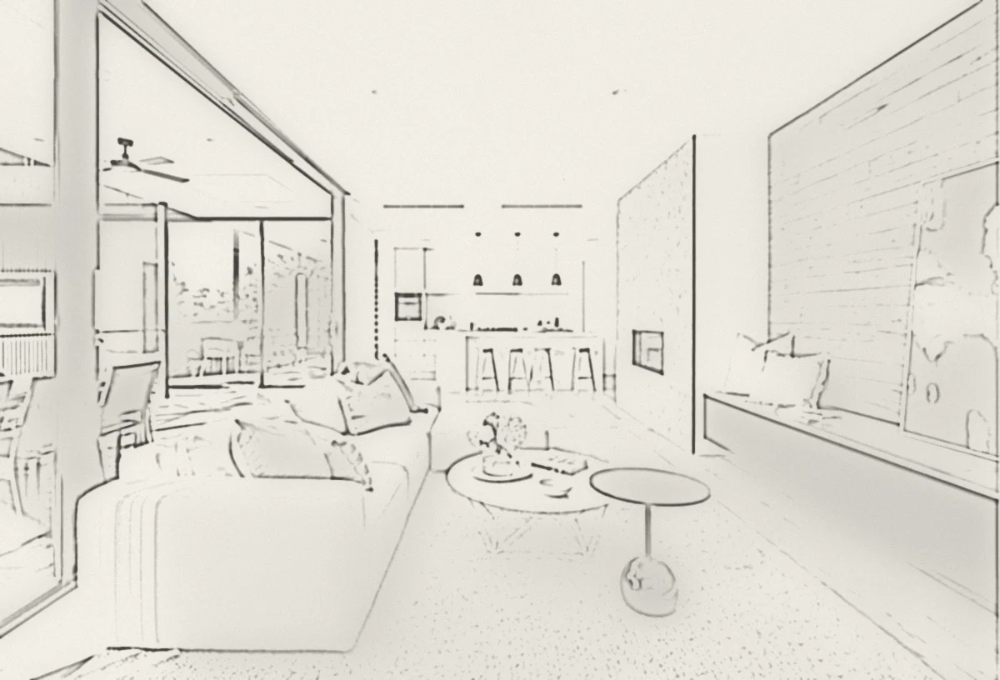

עבודות שמסרנו.
דירות, חדרי רחצה, מטבחים ובתים פרטיים. סננו לפי סוג עבודה ולחצו על תמונה כדי לראות אותה בגדול.
דירת 5 חדרים, סלון ומטבח
דירותחדר רחצה מלונאי
חדרי רחצהמטבח עם אי מרכזי
מטבחיםמסדרון, פרקט ודלתות קו אפס
דירותסלון ופינת אירוח
סלוניםבית פרטי, שיפוץ ועבודות גמר
בתים פרטייםחדר רחצה עם אמבטיה
חדרי רחצהמטבח לבן
מטבחיםסלון עם ריצוף עץ
סלוניםמקלחון וארון כיור
חדרי רחצהבית פרטי, חזית ערב
בתים פרטייםסלון עם תקרת גבס
סלוניםבית עם חזית זכוכית
בתים פרטייםאין עבודות בקטגוריה הזו כרגע.
1 / 13

מהסקיצהלבית גמור.
כל פרויקט מתחיל בתכנון על הנייר. גררו את הקו וראו איך הוא נראה ביום המסירה.


01/ 04